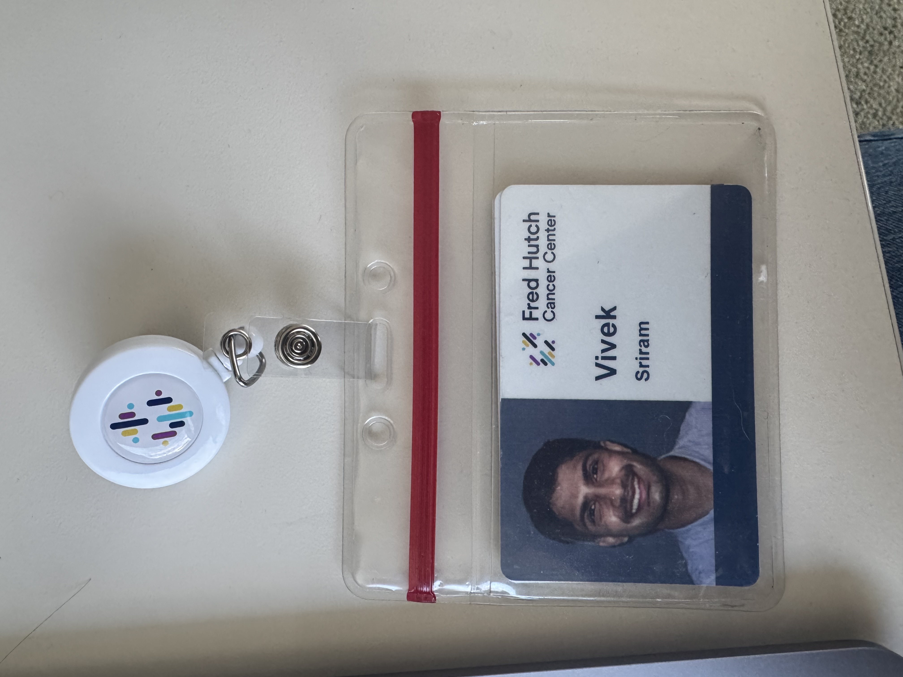

Two years ago, when I joined the Fred Hutch Cancer Center‘s Chief Data Office (officialy known as the ’Office of the Chief Data Officer’ or ‘OCDO’), I had just finished my PhD in Biomedical Informatics at the University of Pennsylvania and was stepping into my first full-time role outside of academia. I was hired as a Clinical Data Scientist with the OCDO’s Translational Data Science (TDS) team. My focus was to help support the Fred Hutch clinical data ecosystem for translational research via clinical natural language processing (NLP), and to promote the use of textual information in the EHR as well as other real-world data for observational studies. From the get-go, I was tremendously excited by the opportunity to work with real-world oncology data and to build systems that could meaningfully impact patient care.

What drew me the most to Fred Hutch was the institution’s combination of rigorous science and clinical proximity. As a member of the TDS team, I appreciated that I could work in the space between basic research and clinical practice, helping to translate research output from the bench into practical use cases for the bedside. Similarly, I appreciated my department’s focus on the practical applications of tooling - as the Chief Data Office for the entire institution, we had to devote our time to the types of tooling that researchers and clinicians would actually use. Our goals were to always center on trustworthiness and data safety, emphasize clinical utility and impact, and avoid tooling overcomplexity. Indeed, a major mantra of our department was “building pits of success” - in other words, making the “right thing to do” with clinical data the easy thing to do!
Throughout my time at the Hutch, I grew a tremendous amount as a biomedical data scientist and health machine learning researcher. This chapter of my career was about going beyond conceptual academic publications, and learning how to:
translate research into practical, production-ready systems
navigate complicated, untidy clinical data
collaborate across deeply interdisciplinary teams
As I’ve transitioned to my next role, I’ve been reflecting on the work at Fred Hutch that shaped me most, as well as the lessons I’ll carry forward.
My Key Projects
1. NLP for Oncology Phenotyping
The longest-term project on which I worked during my tenure at the Hutch was the development of a NLP pipeline to identify a rare oncologic phenotype from unstructured clinical notes.
The challenge:
The phenotype in which our collaborating research team was interested had no reliable structured representation in the EHR. Instead, the signal was highly context-dependent and often buried in long narrative documentation. In order to estimate the prevalence of the symptom in the Fred Hutch patient population, we needed a robust NLP solution.
My contribution:
I designed and implemented complementary NLP modeling approaches that combined common linguistic patterns in a rule-based classifier with named entity recognition (NER) and relation extraction (RE) pipelines to capture fine-grained context from training data in a neural network-based classifier. In addition to the modeling, I built out the data generation and labeling pipeline for the project and developed a full set of annotation guidelines for gold standard corpus development in close collaboration with our clinical research stakeholders. Our final best-performing model was packaged as a Dockerized module, making it portable and reusable on future clinical data. My clinician-in-the-loop annotation workflow for data generation and my reproducible, end-to-end NLP pipeline for oncology phenotyping now both serve as a foundation for future automated phenotyping offerings at the Hutch.
What I learned:
In healthcare AI, model performance is inseparable from task definition. Instead of deriving improvements from model archiecture, the biggest gains in my project’s outcomes came from refining annotation criteria, clarifying edge cases, and ensuring that our data generation process was trustworthy from the start.
2. Bespoke Clinical Data Extraction and Cohort Development
Another major component of my role involved collaborating with researchers and clinicians to develop patient cohorts for research studies and clinical trial enrollment.
The challenge:
Researchers often knew the clinical phenomenon they wanted to study, but translating that information into computable cohort definitions required deep navigation and understanding of the clinical data ecosystem.
My contribution:
I worked directly with clinical stakeholders to clarify research goals and definitions, translating biological and clinical requirements into structured and NLP-based queries. I also helped navigate data access constraints and standards, advising on feasibility based on available structured and unstructured data. Across data requests, my work was an exercise in not only coding but also communication. I had to understand both the medical context behind the request as well as the realities of the underlying data infrastructure. I also had to be able to translate my approach and findings in a manner that was interpretable to both technical and non-technical audiences. Ultimately, my work enabled cohort identification for observational studies and trial recruitment, strengthened trust between clinical stakeholders and the Fred Hutch Chief Data Office, and helped establish clear pathways and standards for future data access requests.
What I learned:
Technical skill (i.e. the ability to code) is necessary but insufficient when working with healthcare data. Impact in the field comes from bridging data literacy with clinical domain expertise.
3. Clinical Data Documentation and Harmonization
As the clinical data ecosystem at Fred Hutch expanded, documentation and harmonization of our data became increasingly important.
The challenge:
Clinical data are fragmented, inconsistently coded, and deeply contextual. Without shared documentation and standardized mappings, downstream analyses can easily become brittle and non-reproducible.
My contribution:
My first task upon joining the team was to help contribute to a preliminary “clinical data guidebook” that could document available datasets, variable definitions, and known caveats. Near the end of my tenure at the Hutch, I also contributed to early-stage data harmonization efforts related to aligning structured drug exposure data with standard clinical vocabularies, supporting exploratory analysis to assess missingness, distribution shifts, and coding inconsistencies.
What I learned:
The right data modeling and governance will have more long-term impact than any single predictive model. Investing in the structure of your data systems upfront enables reproducible and replicable downstream analyses and drastically amplifies the utility of the data in the long term.
4. Clinical Decision Support and Data Visualization
Throughout my time at Fred Hutch, I was also involved in projects related to applied clinical decision support and visualization tooling.
The challenge:
Models and analytics make an impact only if they are accessible and easily interpretable. Clinicians and researchers need intuitive interfaces to be able to understand the data with which they are working.
My contribution:
I built two R Shiny web applications: one to assist with the calculation of mortality risk for a specific patient subpopulation, and the other for the interactive visualization of population-wide cancer incidence and outcomes. My code emphasized reproducibility, documentation, and maintainability, with a focus on modular codebases and tech stacks to allow future extensability. My work helped create tooling that could be iterated on by other team members, reduced friction between modeling outputs and end-user interaction and accessibility, and helped move projects closer to production-grade standards.
What I learned:
Building for maintainability and ease of use are paramount when designing tools for clinical and research workflows.
Lessons Learned
1. Deployability and utility are just as important as accuracy in health ML
When I started at the Hutch, I imagined that the focus of my work would be on using advanced model architectures to achieve the best benchmarks. Over time, I realized the harder questions in health AI were related more to the data themselves and the practicality of deployment. In particular:
How do we determine that we have the right data for the question at hand?
What types of errors in model behavior are acceptable, and which are not?
When is a model “good enough” for clinical use?
Fred Hutch taught me to think beyond common metrics like AUC, and to never forget about clinical utility, reliability, and trust.
2. Interdisciplinary collaboration in biomedicine goes beyond “understanding the biology”
Working alongside oncologists, clinical trial managers, and research coordinators fundamentally reshaped how I approach health data problems. In the past, my comprehension of biomedical concepts was enough to guide my collaboration with clinical stakeholders. At the Hutch, these collaborations had to extend beyond my understanding of the life sciences. Progress in my work depended on clear communication, alignment of expectations, and the translation from clinical to technical perspectives. I became more intentional about stakeholder alignment and more comfortable operating in ambiguity.
3. Clinical data capture is inherently messy
During my PhD, the datasets I worked with were often curated before my analysis. In real-world oncology data, in spite of the fact that data are ingested into full-scale electronic health records, mess is part of the signal. Missingness patterns, documentation variability, and coding heterogeneity are an expectation rather than an exception in typical workflows. Learning to work with that complexity changed how I think about clinical data modeling and access, and it deepened my appreciation for robust data governance and thoughtful guardrails.
4. Democratizing access to data is a must
One of the most important themes I’ll carry forward is the importance of bringing data to users. Clinical data should not live behind opaque pipelines or require advanced technical expertise to interpret. The more we can make data accessible, interpretable, and responsibly governed, the more impact it can have. Approachable tooling builds trust, and in turn, trust enables broader adoption and impact.
Looking forward
Last month, I joined the Enterprise AI team at Humana as a Senior Data Scientist. This move has very much felt like a natural next step in my career. At Fred Hutch, I learned how to build clinically grounded data models and navigate real-world healthcare data. At Humana, I’ll be working on responsible, production-grade generative AI and agentic systems for healthcare workflows at scale.
I’m tremendously grateful to the mentors, collaborators, and teammates who made my time at Fred Hutch so formative! This was without question the best possible first role for me coming out of academia, and it deeply shaped how I think about science and impact as well as my long-term career. I’m excited to bring the lessons I learned at the Hutch to Humana, and to deepen my work in generative AI, multimodal systems, and reliability in healthcare AI - all areas where rigor and real-world constraints intersect in meaningful ways.